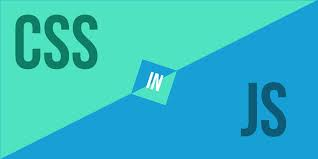
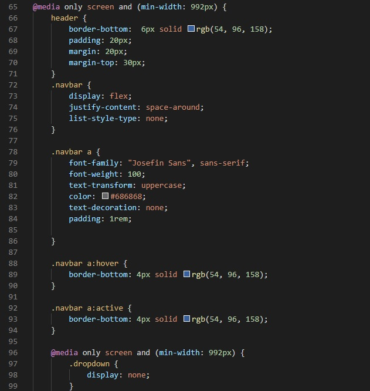

CSS Transitions
What is CSS?
CSS stands for Cascading Style Sheets with an emphasis placed on “Style.” While HTML is used to structure a web document (defining things like headlines and paragraphs, and allowing you to embed images, video, and other media), CSS comes through and specifies your document’s style—page layouts, colors, and fonts are all determined with CSS. Think of HTML as the foundation (every house has one), and CSS as the aesthetic choices (there’s a big difference between a Victorian mansion and a mid-century modern home).
CSS brings style to your web pages by interacting with HTML elements.

How can JavaScript Help?
JavaScript can interact with stylesheets, allowing you to write programs that change a document’s style dynamically.
Difference between Transitions and Animations
Transitions in CSS are applied to an element and specify that when a property changes it should do so over gradually over over a period of time. Animations are different. When applied, they just run and do their thing. They offer more fine-grained control as you can control different stops of the animations.
So How Does it Work?
To trigger an element's transition, toggle a class name on that element that triggers it.
If you need to pause the transition use getComputedStyle and getPropertyValue at the point in the transition you want to pause it. Then set those CSS properties of that element equal to those values you just got.
Explained
CSS transitions provide a way to control animation speed when changing CSS properties. Instead of having property changes take effect immediately, you can cause the changes in a property to take place over a period of time. For example, if you change the color of an element from white to black, usually the change is instantaneous. With CSS transitions enabled, changes occur at time intervals that follow an acceleration curve, all of which can be customized.
CSS transitions let you decide which properties to animate (by listing them explicitly), when the animation will start (by setting a delay), how long the transition will last (by setting a duration), and how the transition will run (by defining a timing function, e.g. linearly or quick at the beginning, slow at the end).